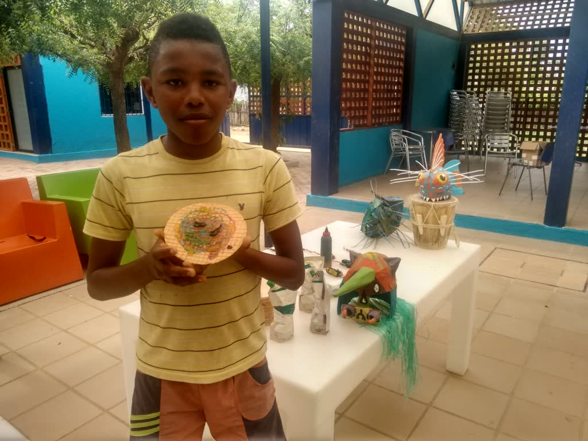
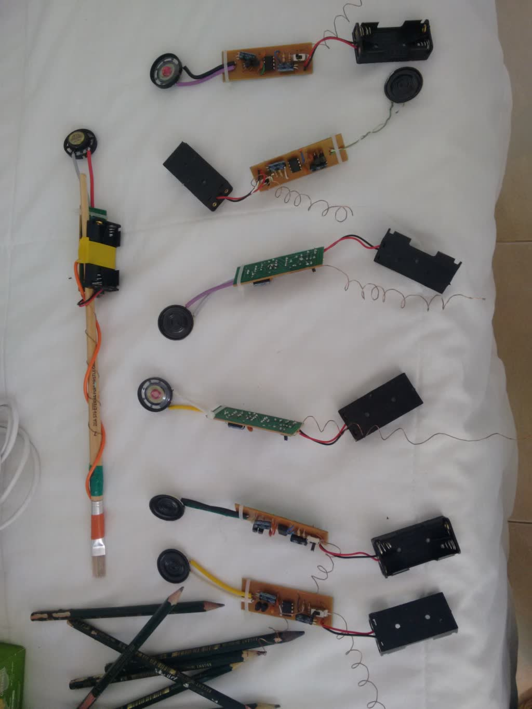

Obleas sonoras in San Basilio de Palenque
- Date
- July 2016
- Venue
- San Basilio de Palenque, Bolívar
- Role
- Workshop leader
- Technologies
- Modified Drawdio, Arduino

Sound experimentation workshop combining a modified Drawdio and gastronomy, for young people in San Basilio de Palenque.
